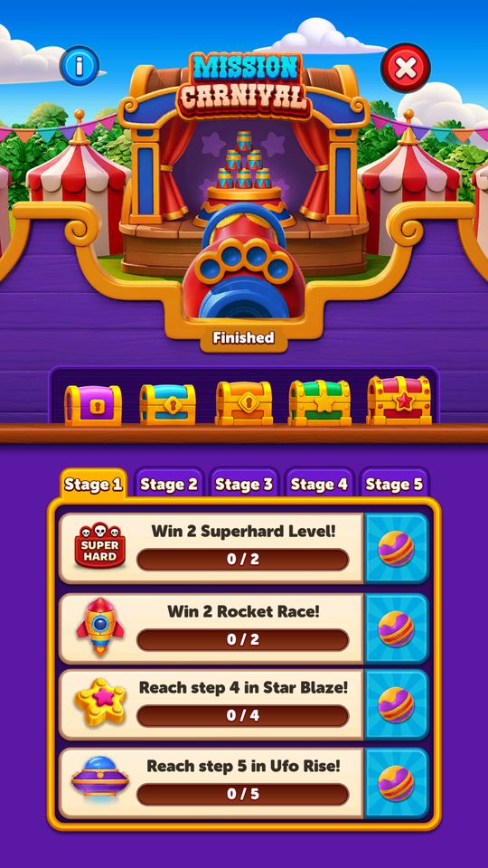
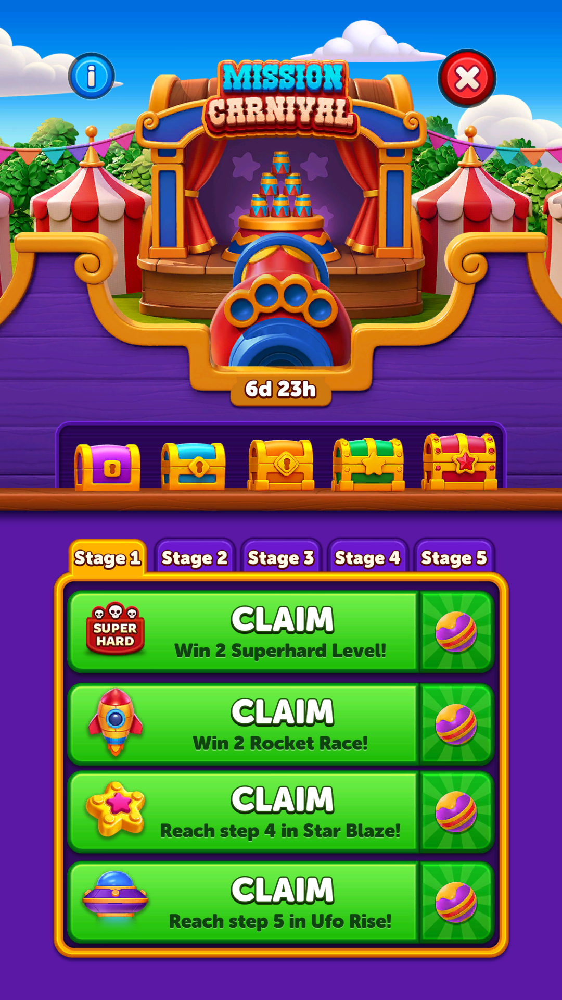

Mission Carnival (Magic Lab)
Sự kiện nhiệm vụ: hoàn thành các nhiệm vụ trải khắp các sự kiện khác của game để nhận thưởng.
Mô tả
- Sự kiện nhiệm vụ: hoàn thành các nhiệm vụ trải khắp các sự kiện khác của game để nhận thưởng.
- Đây là lớp 'meta' nối các sự kiện lại với nhau — MagicLabTaskType cho thấy nhiệm vụ kéo từ SuperHard/Hard level, JetpackRace, StreakRace, UfoRise, SkyJump và GAE.
Thiết kế chi tiết
Tóm tắt thiết kế
Playtest Tên trong game là Mission Carnival (code MagicLab), icon khẩu pháo bên phải Home, mở từ level 100. Kỳ gần nhất trong save: 12/10 07:00 → 15/10 19:00 UTC (3,5 ngày, trùng khung với Star Blaze và UFO Rise). Ngày 28/10 icon ghi “Finished”, chưa có kỳ mới.
Live 28/10 5 stage, mỗi stage 4 nhiệm vụ cùng loại nhưng chỉ tiêu tăng dần: Thắng màn Super Hard, Thắng Rocket Race, Đạt mốc Star Blaze, Đạt bậc UFO Rise. Xong cả 4 nhiệm vụ của stage thì mở rương stage. autoClaimEnabled = false: phải tự bấm CLAIM từng nhiệm vụ.
Code MagicLabService nhận tín hiệu từ các sự kiện khác. Các sự kiện chỉ cộng điểm Magic Lab khi chính chúng đang chạy (ví dụ Star Blaze dùng CanGetScoreForMagicLab: trạng thái 3 hoặc 7).
Nhận định Đây là lớp meta “chơi nhiều sự kiện cùng lúc”: một trận Super Hard thắng liền mạch có thể tiến cùng lúc 5–6 thanh (Star Blaze, UFO, Streak, Rocket Race, Weekly, Mission Carnival).
Luồng người chơi từng bước
- Kỳ mớiGiao diện Playtest07/10: popup luật tự mở trong hàng đợi về Home (#23 Magic Lab), rồi bảng
 5 rương, nhiệm vụ stage 1.
5 rương, nhiệm vụ stage 1. - Làm nhiệm vụNgười chơi PlaytestTiến độ tự cộng khi chơi các sự kiện khác; nhiệm vụ đủ chỉ tiêu hiện nút CLAIM. Bấm CLAIM thì bóng nhiệm vụ bay vào khẩu pháo.

2 nhiệm vụ xong 
CLAIM: bóng bay vào pháo - Xong stageClient PlaytestFixture 13/10: nhận đủ 4 nhiệm vụ thì pháo bắn, mở rương stage 1 (
 1 giờ mạng + booster), sang stage 2.
1 giờ mạng + booster), sang stage 2. - Hết kỳGiao diện Playtest28/10: icon “Finished”; mở ra vẫn thấy bảng kỳ cũ với tiến độ 0, không làm tiếp được.

28/10: kỳ đã kết thúc


Chỉ tiêu nhiệm vụ theo stage (kỳ 12–15/10)
| Stage | Thắng màn Super Hard | Thắng Rocket Race | Đạt mốc Star Blaze | Đạt bậc UFO Rise | Rương (có Collection) | Rương (không Collection) |
|---|---|---|---|---|---|---|
| 1 | 2 | 2 | 4 | 5 | rương #0 (1 giờ mạng vô hạn +  Time Freeze ×1 + Time Freeze ×1 +  UFO ×1 + gói thẻ 2 lá) UFO ×1 + gói thẻ 2 lá) | rương #0 (1 giờ mạng vô hạn + Time Freeze ×1 +  Rocket ×1 + UFO ×1) Rocket ×1 + UFO ×1) |
| 2 | 5 | 4 | 7 | 11 | rương #0 (2 giờ mạng vô hạn +  100 coin + Time Freeze ×1 + Rocket ×1 + UFO ×1 + gói thẻ 3 lá) 100 coin + Time Freeze ×1 + Rocket ×1 + UFO ×1 + gói thẻ 3 lá) | rương #0 (2 giờ mạng vô hạn + 200 coin + Time Freeze ×1 + Rocket ×1 + UFO ×1) |
| 3 | 8 | 6 | 10 | 17 | rương #0 (3 giờ mạng vô hạn + 200 coin + Time Freeze ×1 + Rocket ×1 + UFO ×1 + gói thẻ 4 lá) | rương #0 (3 giờ mạng vô hạn + 300 coin + Time Freeze ×1 + Rocket ×1 + UFO ×1) |
| 4 | 11 | 8 | 13 | 22 | rương #0 (6 giờ mạng vô hạn + 300 coin + Time Freeze ×2 + Rocket ×2 + UFO ×2 + gói thẻ 5 lá) | rương #0 (6 giờ mạng vô hạn + 400 coin + Time Freeze ×2 + Rocket ×2 + UFO ×2) |
| 5 | 16 | 10 | 16 | 33 | rương #0 (6 giờ mạng vô hạn + 400 coin + Time Freeze ×2 + Rocket ×2 + UFO ×2 + gói thẻ loại 5) | rương #0 (6 giờ mạng vô hạn + 600 coin + Time Freeze ×2 + Rocket ×2 + UFO ×2) |
Live 28/10 MagicLabModelV2.cacheModel.stages do backend gửi. Nhận định Stage 5 cần 16 màn Super Hard (1 màn Super Hard mỗi 10 màn), tức khoảng 160 màn trong 3,5 ngày.
Vận dụng cho game khác
- Gom tiến độ các sự kiện song song vào một bảng nhiệm vụ: người chơi có lý do tham gia đủ mọi sự kiện, và mỗi trận thắng được “tính nhiều lần”.
- Bắt bấm CLAIM thủ công từng nhiệm vụ để tạo thêm khoảnh khắc thưởng và thêm một lý do mở bảng.
Bảng tổng hợp mọi tính năng đã làm chi tiết: BlockOut_ThietKeChiTiet.xlsx.
Còn thiếu / chưa xác minh
Mở khóa & điểm vào
MagicLabConfigModel.FirstLevelToShow = 100. Client mặc định tắt (IsEnabled false) nhưng server đang bật; EventType client 4, server 7.
Điểm vào:
- Biểu tượng Magic Lab ở Home
Cách hoạt động
- MagicLabDataService (55 method) lưu tiến độ từng nhiệm vụ; MagicLabService (41 method) nhận tín hiệu từ các sự kiện khác và cộng tiến độ.
- MagicLabTaskType liệt kê 7 loại nhiệm vụ: SuperHardLevel, HardLevel, JetpackRaceWin, StreakRaceScoreReach, UfoRiseStepReach, SkyJumpWin, GaeStepReach.
- AutoClaimEnabled quyết định thưởng có tự vào túi hay phải bấm nhận.
- MagicLabPopUpState (FirstShowEver, FirstShow, InProgress, Result) lo popup; MissionCarnivalHeroImageController cho thấy sự kiện này còn có tên gọi khác trong nội bộ là 'Mission Carnival'.
Luồng chi tiết theo code
MagicLabDataService (55 method) lưu tiến độ từng nhiệm vụ; MagicLabService (41 method) nhận tín hiệu từ các sự kiện khác và cộng tiến độ. MagicLabTaskType liệt kê 7 loại nhiệm vụ: SuperHardLevel, HardLevel, JetpackRaceWin, StreakRaceScoreReach, UfoRiseStepReach, SkyJumpWin, GaeStepReach. AutoClaimEnabled quyết định thưởng có tự vào túi hay phải bấm nhận. MagicLabPopUpState (FirstShowEver, FirstShow, InProgress, Result) lo popup; MissionCarnivalHeroImageController cho thấy sự kiện này còn có tên gọi khác trong nội bộ là 'Mission Carnival'.
Ảnh chụp màn hình (11)
11 ảnh chụp trong game (LDPlayer, bản 1006, tài khoản thử level 320 → 350 (07/10/2026)). Bấm ảnh để phóng to; nhãn UC dẫn tới use case tương ứng.
 5 UFO Rise (mỗi nhiệm vụ cho 1 quả bóng)
5 UFO Rise (mỗi nhiệm vụ cho 1 quả bóng)
 2 Rocket Race 0/2, đạt bậc 4 Star Blaze 2/4, đạt bậc 5 UFO Rise 2/5 (tiến độ tính từ sự kiện khác đang chạy)2 Rocket Race" và "Reach step 5 in UFO Rise" đã xong (nút CLAIM xanh); Super Hard 1/2, Star Blaze 3/4
2 Rocket Race 0/2, đạt bậc 4 Star Blaze 2/4, đạt bậc 5 UFO Rise 2/5 (tiến độ tính từ sự kiện khác đang chạy)2 Rocket Race" và "Reach step 5 in UFO Rise" đã xong (nút CLAIM xanh); Super Hard 1/2, Star Blaze 3/4



 1 giờ mạng vô hạn, Freeze ×1, Rocket ×1 và UFO ×1. Ảnh xác nhận nội dung popup; chưa xác minh phần thưởng đã được server cấp hoặc đồng bộ thành công. Fixture: lab-ready.
1 giờ mạng vô hạn, Freeze ×1, Rocket ×1 và UFO ×1. Ảnh xác nhận nội dung popup; chưa xác minh phần thưởng đã được server cấp hoặc đồng bộ thành công. Fixture: lab-ready.Số liệu chính
| Chỉ số | Giá trị | Nguồn |
|---|---|---|
| MagicLabConfigModel.FirstLevelToShow | 100 | MagicLabConfigModel.FirstLevelToShow — Assets/Resources/defaultconfigs/MagicLabConfigModel.json |
Use case (3)
Bấm vào từng use case để mở. Mở/đóng tất cả
UC-01 Hoàn thành nhiệm vụ từ sự kiện khác
Các bước- Sự kiện nguồn phát tín hiệu
- MagicLabService cộng tiến độ nhiệm vụ tương ứng
- MagicLabDataService lưu
| Actor | Player |
|---|---|
| Trigger | Thắng màn SuperHard / thắng Jetpack Race / đạt bậc UfoRise… |
| Điều kiện | Sự kiện đang chạy |
| Kết quả | Tiến độ nhiệm vụ tăng |
| Quy tắc / số liệu | 7 loại nhiệm vụ trong MagicLabTaskType: SuperHardLevel=1, HardLevel=2, JetpackRaceWin=3, StreakRaceScoreReach=4, UfoRiseStepReach=5, SkyJumpWin=6, GaeStepReach=7 |
| Evidence | MagicLabService; enum MagicLabTaskType |
UC-02 Nhận thưởng nhiệm vụ
Các bước- AutoClaimEnabled = true thì tự trao
- false thì người chơi bấm nhận
- RewardService trao
| Actor | Player |
|---|---|
| Trigger | Nhiệm vụ hoàn thành |
| Điều kiện | - |
| Kết quả | Nhận quà |
| Quy tắc / số liệu | AutoClaimEnabled = false ở cả client và server — người chơi phải mở popup để nhận, tức game kéo được thêm một lượt mở app |
| Evidence | MagicLabConfigModel.AutoClaimEnabled |
UC-03 Sự kiện được server bật
Các bước- Client đóng gói với IsEnabled = false
- Server gửi IsEnabled = true và EventType = 7
- MagicLabStateService chuyển khỏi Disable
| Actor | Server |
|---|---|
| Trigger | Firebase Remote Config |
| Điều kiện | - |
| Kết quả | Sự kiện chạy dù bản build gốc tắt nó |
| Quy tắc / số liệu | Đây là ví dụ rõ nhất về việc đọc riêng config client sẽ cho kết luận sai |
| Evidence | appendix/config-default-vs-live.md; MagicLabConfigModel |
Cấu hình (6)
Gộp mọi nguồn: const trong code, JSON mặc định trong Resources, bảng static, storage key, AB test, cờ server.
| Nguồn | Key | Kiểu | Giá trị | Ý nghĩa | Nơi định nghĩa |
|---|---|---|---|---|---|
| code const | MagicLabTaskType | enum | None=0, SuperHardLevel=1, HardLevel=2, JetpackRaceWin=3, StreakRaceScoreReach=4, UfoRiseStepReach=5, SkyJumpWin=6, GaeStepReach=7 | 7 loại nhiệm vụ, kéo từ 5 sự kiện khác | enum MagicLabTaskType |
| code const | MagicLabStateType / MagicLabPopUpState | enum | mẫu 8 trạng thái chung / FirstShowEver, FirstShow, InProgress, Result | Trạng thái sự kiện và popup | enum MagicLabStateType, MagicLabPopUpState |
| json default | MagicLabConfigModel.IsEnabled | bool | true — server đang chạy; mặc định client: false | Assets/Resources/defaultconfigs/MagicLabConfigModel.json | |
| json default | MagicLabConfigModel.EventType | int | 7 — server đang chạy; mặc định client: 4 | Assets/Resources/defaultconfigs/MagicLabConfigModel.json | |
| json default | MagicLabConfigModel.FirstLevelToShow | int | 100 | Assets/Resources/defaultconfigs/MagicLabConfigModel.json | |
| json default | MagicLabConfigModel.AutoClaimEnabled | bool | false | Assets/Resources/defaultconfigs/MagicLabConfigModel.json |
Backend / server
| Command | Chiều | Mục đích |
|---|---|---|
MagicLab event | client↔server | lấy danh sách nhiệm vụ kỳ này |
Giao diện (UI)
| Element | Class | Mục đích |
|---|---|---|
| Ảnh chủ đề | Modules.Contexts.Home.MagicLab.MissionCarnivalHeroImageController | ảnh lớn đầu màn hình |
Storage keys
MagicLab data (tiến độ từng nhiệm vụ)
Chưa đọc được / ghi chú
- Nhiệm vụ và thưởng do backend gửi theo kỳ; kỳ 12–15/10 có 5 stage × 4 nhiệm vụ (bảng ở mục Thiết kế chi tiết).
Tính năng liên quan
Star Blaze (GAE) — thang sao nhân chuỗi thắng UFO Rise (leo thang có chốt an toàn) Rocket Race (Jetpack Race theo chặng) Lily Leap (Sky Jump theo chặng) Streak Race (Streak Tournament, giải chuỗi thắng 24 giờ)
Nguồn đã đọc
- PseudoC/.../Home/MagicLab/MagicLabService.c
- Assets/Resources/defaultconfigs/MagicLabConfigModel.json